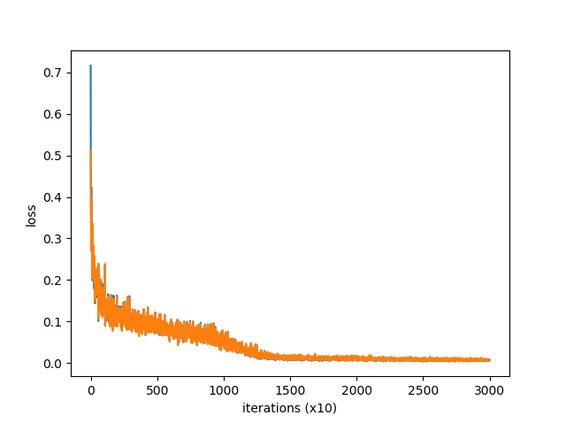
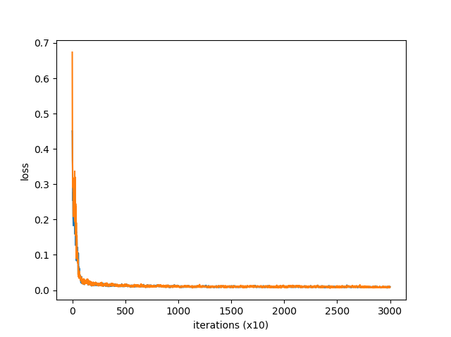
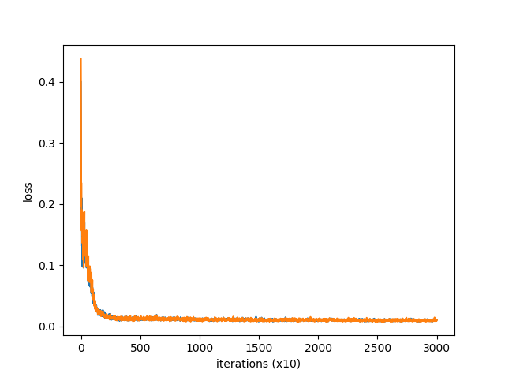
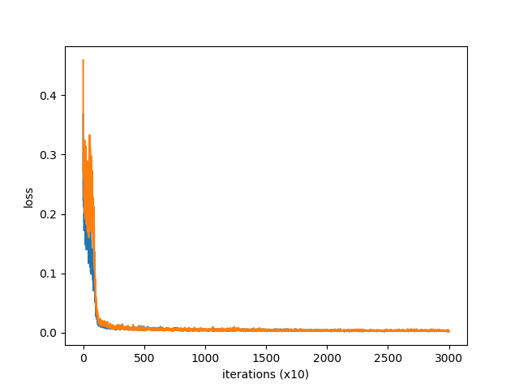
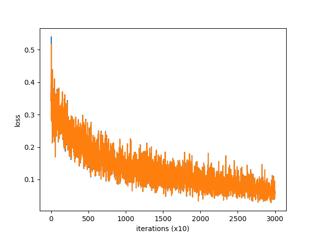

ニューラルネットで負の学習: 競争的な学習の実験 その２
■概要
競争的学習において、勝った例を負けた側が学習するだけでなく、負けた例と「若干」逆側になるように勝った側が学習することにより、学習が劇的に改善した。
競争的学習とは、ここでは、単純な2入力2出力(入出力いずれもアナログ値)の関数の学習を3層のニューラルネットワークで行う。ただし、別の初期値を持つ同じモデル二つについて、学習の際は、正解の出力がわからないが、その二つのモデルのうちどちらがより正解に近いか、すなわち、その「勝者」がどちらかだけはわかるという設定とする。
「若干逆側」にするときは、悪い例が離れていればすでに悪くなるのは避けられているのであるから、影響は 0 に近くする。悪い例が予測とほぼ一致するときは「逆側」を強く定めることができないので、これもしかたなく影響を 0 に近くする。そこそこ近い悪い例についてのみ逆側にしっかり倒して学習するようにする。
■はじめに
前回の実験において、「負の学習」を試みたがうまくいかなかった。そこを何とか改善できないかというのが今回の動機である。
ブレインストーミング的なアイデアから語りはじめよう。
負例を学習するときは、負例を選びにくくなるように空間が変形して欲しい。「空間」が変形するというのは、予想が決まる空間の変形のことである。その空間の中である程度ランダムに決まるのだとせねばならないのではか…。
軸(平均)の予想があって分散の予想がある。…とでもしよう。ランダムに決まった予想があり、それが実際の数値と離れているかどうか…。
ランダムに決まった予想が平均から離れていたとき実際の数値が予想に近ければ、平均を移動すればよいのだろうか…。
でも、負例の学習をしたいなら、以前の負例の状況が活かされないといけないから、平均や分散の変形だけではダメになるんじゃないか？ 負例のいくつかの平均をとったら、それは一つの負例と同じということになりかねない。
まぁ、しかし考えてみよう。負例が軸そのものと重なったなら、軸を大きく動かさねばならないだろう。同時に分散も大きくする。逆に、負例が軸から離れていれば、軸の移動はあまり考慮する必要はない。分散は軸の周りに近付ければいいのか？
いや、この軸の移動だけ取り出して、ランダムじゃないものに活かせないか？ つまり、負例が近くにいるとき正例を遠くに動かし、遠くにいるときは近くが正しいとして学習してはどうだろう？
競争的学習について考える。
負け例が勝ち例と遠いなら、- α * (負け例 - 勝ち例) + 勝ち例 の α が非常に小さいものを学習のためのデータとする。
逆に負け例が勝ち例と近いなら、- α * (負け例 - 勝ち例) + 勝ち例 の αが大きくてよい。ただし、負け例と勝ち例が非常に近くても、α は 1 程度で十分であろう。もちろん、そのとき α * (負け例 - 勝ち例) 〜 0 である。
分岐点を C とし、そのとき α = 1/2 になればよい。
負け例を Y、勝ち例を Y'、学習すべき例を Y'' とする。 y' = Y'' - Y', y = Y - Y' とする。
|y'| を縦軸に |y| を横軸にしたグラフを書くと、原点 0 をスタートし、 C で最大値をとり、|y| が増えるにつれて減少しながらなだらかに 0 に近づくグラフになる。
|y'|/|y| を縦軸に |y| を横軸にしたグラフを書くと、 |y| = 0 で |y'|/|y| = 1、|y| = C で |y'|/|y| = 1/2、あとは |y| が増えるにつれて減少しながらなだらかに 0 に近づくグラフになる。
|y'|/|y| を縦軸に |y| を横軸にしたグラフは正規分布に似ている。
ゆえに |y'|/|y| = exp(-|y|**2/(2*σ**2)) とする。
|y'| = |y| * exp(-|y|**2/(2*σ**2)) となるが、これはレイリー分布(Reyleigh distribution)といって、上の要求するグラフに近くなる。
ただし、C のとき |y'|/|y| = 1/2 で |y'| が最大値になるわけではない。が、C = σ として |y'|/|y| = 0.6... で、C = σ ** 2 で最大値になる。
負の学習においては、勝った側が、
Y'' = - (Y - Y') * exp(- |Y - Y'| ** 2 / (2 * σ ** 2)) + Y' ... (3)
を学習すれば良いのではないか？
もちろん、正の学習として、負けた側が勝ち例を学ぶこともする。
…いや、これで負の学習だけをした場合、勝ち例と負け例がだんだん離れていくことになりそうだ。そして、真ん中に真の値を挟むような形になる…と。
むしろ、内側に進むべきではないか。
Y'' = + (Y - Y') * exp(- |Y - Y'| ** 2 / (2 * σ ** 2)) + Y'
…という感じか？
でも、もっと思い切って、勝ち例と負け例の真ん中を学習していってはどうだろう？
Y'' = (1/2) * (Y - Y') + Y'
ここで (1/2) は (1/3) や (2/5) などでも良い。
上で考えたことも活かしたい。ハイブリッドに
Y'' = (1/2) * (Y - Y') - (Y - Y') * exp(- |Y - Y'| ** 2 / (2 * σ ** 2)) + Y'
または
Y'' = + (1/2) * (Y - Y') * exp(- |Y - Y'| ** 2 / (2 * σ ** 2)) + Y'
…も意味があるだろうか？
…いや、ダメだ。勝ち例と負け例の間に真の値が常にあるなら、これでよい。しかし、そうではないことがありうる。勝ち例の外側に真の値がある場合だ。この場合、負例の学習だけやっていると勝ち例が負け例の側に寄っていくが、それはニセの極限で、真の値からは外れた値になりうる。
戻って、(3) であれば、どんどん外側に離れていくが、間に真の値が必ず現れることになるだろう。これを活かせないか？ 勝ち例だけでなく負け例も動かして、…というのは、すでに正例の学習でやっているな…。
正例の学習を同時にやるなら (3) は意味があるのではないか。より外側も探索することになるから。
どうだろう？ 実験してみないことにはなんとも…。
勝ち例と負け例が一致するからと言って、真の値と等しいとは限らないというのは (3) でも同じである。よって、Y'' は、一定値、ランダムにずれるようにし、学習が進むにつれてその一定値を小さくすればいいのではないか？
…といった感じでブレインストーミングした結果、とにかく (3) を調べ、その後、他のアイデアも試してみることにした。
■ソース
TensorFlow を使わないバージョンの comp_learn_3.py のソースを途中から切り出すとだいたい次のようになる。
total_loss1 = 0
total_loss2 = 0
loss_count = 0
loss_list1 = []
loss_list2 = []
for epoch in range(max_epoch):
for iters in range(max_iters):
batch_x = np.random.uniform(-1.0, 1.0, (batch_size, input_size))
batch_t = answer_of_input(batch_x)
p1 = model1.predict(batch_x)
p2 = model2.predict(batch_x)
d = np.sum(np.square(p1 - batch_t), axis=1, keepdims=True) \
< np.sum(np.square(p2 - batch_t), axis=1, keepdims=True)
t1 = np.where(d, p1, p2)
ploss1 = model1.calc_loss(p1, t1)
Ploss2 = model2.calc_loss(p2, t1)
model1.backward()
model2.backward()
optimizer.update(model1.params, model1.grads)
optimizer.update(model2.params, model2.grads)
pnd = neg_coeff * (p1 - p2) \
* np.exp(- np.sum(np.square(p1 - p2), axis=1, keepdims=True)
/ (2 * neg_sigma ** 2))
pn1 = pnd + p2
pn2 = - pnd + p1
t2_1 = np.where(~d, p1, pn2)
t2_2 = np.where(~d, pn1, p2)
nloss1 = model1.calc_loss(p1, t2_1)
nloss2 = model2.calc_loss(p2, t2_2)
model1.backward()
model2.backward()
noptimizer.update(model1.params, model1.grads)
noptimizer.update(model2.params, model2.grads)
loss1 = model1.calc_loss(p1, batch_t)
loss2 = model2.calc_loss(p2, batch_t)
total_loss1 += loss1
total_loss2 += loss2
loss_count += 1
if (iters + 1) % 10 == 0:
avg_loss1 = total_loss1 / loss_count
avg_loss2 = total_loss2 / loss_count
print('| epoch %d | iter %d / %d | loss %.2f, %.2f'
% (epoch + 1, iters + 1, max_iters, avg_loss1, avg_loss2))
loss_list1.append(avg_loss1)
loss_list2.append(avg_loss2)
total_loss1, total_loss2, loss_count = 0, 0, 0
上の (3) にするには neg_coeff = -1.0 にする。neg_sigma = 1.0 ではじめは試した。そこを計算するところなどが、comp_learn_1.py から変わっている。あと、comp_learn_1.py は「負の学習」は negative_learning_rate がマイナスになるようにしていたが、今回は、あくまでもそれを正しいものとして学習するのでプラスのままで扱っているのが違う。
これに、さらに中間の値を取る(neg_mid で中間の位置を指定)コードと、ランダムな半球面上の点を足す(neg_bs_first, neg_bs_mid, neg_bs_last)コードを足したのが comp_learn_4.py である。t2_1 と t2_2 の計算の部分だけが上と違うのでその部分のみ下に示す。
bs = None
if epoch < max_epoch / 2:
bs = neg_bs_first + (neg_bs_mid - neg_bs_first) * epoch \
/ (max_epoch / 2)
else:
bs = neg_bs_mid + (neg_bs_last - neg_bs_mid) * \
(epoch - max_epoch / 2) / (max_epoch / 2)
bs = bs * np.array([bsphere_rand(input_size) \
for i in range(batch_size)])
pnd = neg_mid * (p1 - p2) + neg_coeff * (p1 - p2) * \
np.exp(- np.sum(np.square(p1 - p2), axis=1, keepdims=True)
/ (2 * neg_sigma ** 2)) + bs
pn1 = pnd + p2
pn2 = - pnd + p1
t2_1 = np.where(~d, p1, pn2)
t2_2 = np.where(~d, pn1, p2)
bsphere_rand(input_size) は input_size 次元の単位球面上のランダムな点を生成する関数である。
TensorFlow バージョンはアーカイブには入っているが、ここでは割愛する。
■実験
詳しくは前回を見ていただきたいが、--hidden-size=10 より大きくないとうまくいかなかった。--hidden-size=10 の結果 comp_learn_1_2.png を再掲する。

comp_learn_3.py を --neg-coeff=-1.0, --neg-sigma=1.0 で実行すると、劇的に改善され、これまで以上にうまくいく。
% python comp_learn_3.py --hidden-size=10
:
(中略)
:
| epoch 300 | iter 80 / 100 | loss 0.01, 0.01
| epoch 300 | iter 90 / 100 | loss 0.01, 0.01
| epoch 300 | iter 100 / 100 | loss 0.01, 0.01
そして comp_learn_3_2.png が表示される。

前回はさほどよくなかった --hidden-size=7 でさえうまくいく。% python comp_learn_3.py
:
(中略)
:
| epoch 300 | iter 80 / 100 | loss 0.01, 0.01
| epoch 300 | iter 90 / 100 | loss 0.01, 0.01
| epoch 300 | iter 100 / 100 | loss 0.01, 0.01
そして comp_learn_3_3.png が表示される。

一方、結果は載せないが、--neg-coeff=1.0 や --neg-coeff=0.5 などはまったくうまくいかない。
--neg-sigma=0.5 など小さくしたほうが最終的な学習結果はよくなるが、学習がこころなしか遅くなるようだ。
一方、--learning_rate=0.0 にして正の学習をなしにしてみると、予想通り学習が進まないが、進まないというだけで発散するほど大きく悪化するわけではないのが他のパラメータと違うところかもしれない。
comp_learn_4.py に移ろう。--neg-mid=0.5, --neg-bs-first=0.1, --neg-bs-mid=0.01, --neg-bs-last=0.0 で試す。
% python comp_learn_4.py
:
(中略)
:
| epoch 300 | iter 80 / 100 | loss 0.00, 0.00
| epoch 300 | iter 90 / 100 | loss 0.00, 0.00
| epoch 300 | iter 100 / 100 | loss 0.00, 0.00
そして comp_learn_4_1.png が表示される。少し改善されるようだ。

が、そもそも --neg-coeff がないとうまくいかない。
% python comp_learn_4.py --neg-coeff=0.0 --hidden-size=10
:
(中略)
:
| epoch 300 | iter 80 / 100 | loss 0.07, 0.07
| epoch 300 | iter 90 / 100 | loss 0.06, 0.06
| epoch 300 | iter 100 / 100 | loss 0.06, 0.06
そして comp_learn_4_2.png が表示される。最初に再掲したものと比べると少し悪化しているぐらいかもしれない。

--neg-mid だけを削ることもやってみたが、comp_learn_3.py と同じレベルに落ち着き、あったほうがこころなしか良いという結果になった。
■結論
負の学習をうまくする方法を見つけたようである。うれしい。
が、なぜそうなのか、今一つ理論的にはっきりしない。上の「はじめに」での考察はあくまでブレインストーミングレベルのもので、大して意味はない。正規分布のような関数を使ったが、「若干逆側になるようにする」程度の意味しかないかもしれない。その辺りは今後の課題としたい。
また、comp_learn_4.py で結果が改善したのも謎であり、そこのところも今後の課題となる。
■参考
Python 関連のサイト… Numpy や TensorFlow のサイトにいろいろお世話になったが、それらについては感謝の上で割愛する。前回載せた部分についても割愛する。
●《機械学習の練習のため競争的な学習の実験をしてみた》。前回の実験。
■配布物
前回と同じアーカイブにまとめた。下の ZIP がそうである。
●comp_learn_1.zip
■著者
JRF ( http://jrf.cocolog-nifty.com/software/ )
■ライセンス
私が作った部分に関してはパブリックドメイン。 (数式のような小さなプログラムなので。)
自由に改変・公開してください。
ちなみに『ゼロから作る Deep Learning』のソースは MIT License で、『scikit-learn と TensorFlow による実践機械学習』のソースは Apache License 2.0 で公開されています。その辺りをどう考えるかは読者にまかせます。
更新：2019-05-16,2019-06-13
初公開：2019年05月16日 05:49:53
最新版：2019年06月13日 21:27:52
Comments:
初投稿: comp_learn_1-20190516.zip。バージョン 0.0.4。
comp_learn_3.py, comp_learn_3_tf.py, comp_learn_4.py, comp_learn_4_tf.py, 00_README2.txt が新たに入ったファイルで、それ以外のファイルは comp_learn_1.zip に含まれていたもの。
ココログの全面リニューアルにともない自由にファイルをアップロードすることができないため、暫定的に SugarSync にアップロードしている。将来的に、このブログサイトが生きていても、SugarSync のリンクは死ぬことがありえるため、今後、対策を考えたい。
今回のバージョンは↓の SugarSync から手に入る。
https://www.sugarsync.com/pf/D252372_79_6965536145
投稿: JRF | 2019-05-16 06:03:12 (JST)
更新: 記事のタイトルのみ変更。
記事のタイトルを「機械学習の練習のため競争的な学習の実験: その２ 負例の研究」から「ニューラルネットで負の学習: 競争的な学習の実験 その２」に変えた。
投稿: JRF | 2019-05-17 15:18:32 (JST)
更新はしていないが、ちょっと私の側の問題があり、SugarSync のリンクを書き換えた。中身は変わっていない。
バージョン 0.0.4 のリンクも↓に変わった。
https://www.sugarsync.com/pf/D252372_79_6993338555
投稿: JRF | 2019-05-24 22:57:33 (JST)
更新: 記事の概要のみ更新。悪い例を「丸く」逆側に倒すことについて少し書き足した。
投稿: JRF | 2019-06-13 21:30:45 (JST)
Links:
前回: http://jrf.cocolog-nifty.com/software/2019/01/post.html
機械学習の練習のため競争的な学習の実験をしてみた: http://jrf.cocolog-nifty.com/software/2019/01/post.html
comp_learn_1.zip: https://www.sugarsync.com/pf/D252372_79_6993338965
後方参照 (7 件)
- URL参照 [cocolog:93117909] のブレインストーミングの続き。 ……。… 2021-11-16T18:56:08Z
- URL参照 LSTM… 2021年11月09日
- URL参照 Predictor - Actor (- Recollector) モデルと負の学習 2020年02月07日 01:45:07
- URL参照 曽我部東馬『強化学習アルゴリズム入門』と伊藤多一 他『現場で使える！… 2020年01月14日
- URL参照 田中＆富谷＆橋本『ディープラーニングと物理学』に目を通した。その感想とは関係ない… 2019年10月12日
- URL参照 競争的な機械学習において、勝った例を負けた側が学習するだけでなく、負けた例と「若… 2019年05月16日
- URL参照 機械学習の練習のため競争的な学習の実験をしてみた 2019年01月26日 00:23:09